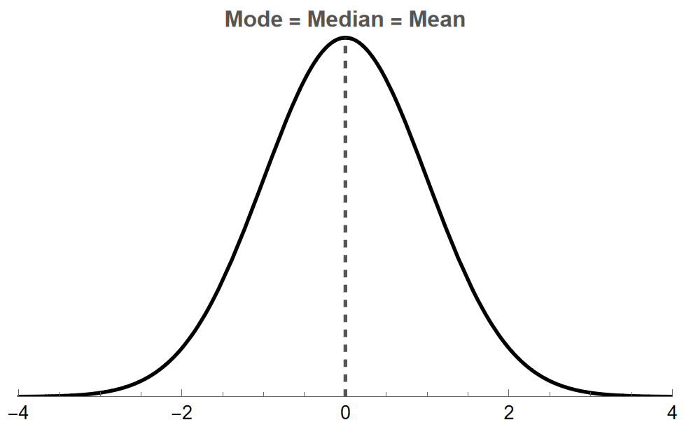
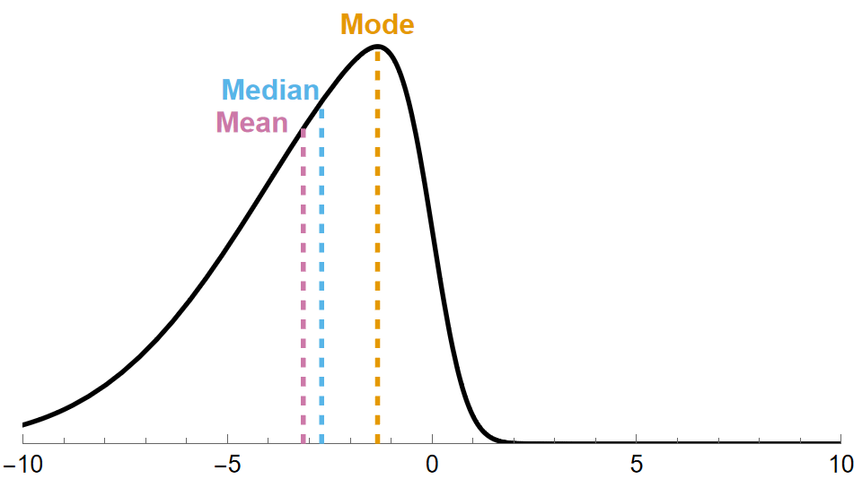

How Skewness Affects the Mean, Median, and Mode of a Dataset
Measures of central tendency—mean, median, and mode—help us describe datasets. However, their values are influenced by the shape of the distribution and the presence of outliers. In this section, we will define outliers, explore how outliers impact these measures, and how their relationships change based on the skewness of a dataset.
Outliers
What is an Outlier?
An outlier is a data point that does not follow the overall pattern or shape of a distribution. These are data points that are typically much larger or much smaller than other points in the data set.
Let's look at an example to see how outliers affect the mean, median and mode.
Example 1
A list of 5 exam scores are given below.
\[78\qquad 82\qquad 84\qquad 91\qquad 91\]
- Part A: Find the mean, median, and mode of this distribution.
- Part B:Another student scored a 41 on the exam, which is an outlier compared to the other five scores. Revaluate the mean, median, and mode.
- Part C: Which measure of center changed the least? Which changed the most? Did any remain unchanged?
Solution
Part A
- \(\textbf{mean } =\dfrac{78+82+84+91+91}{{5}}=85.2\)
- \(\textbf{median }=84\)
- \(\textbf{mode }=91\)
Part B
- \(\textbf{mean } =\dfrac{41+78+82+84+91+91}{{6}}=77.83\)
- \(\textbf{median }=\dfrac{82+84}{{2}}=81\)
- \(\textbf{mode }=91\)
Part C
- The mean changed the most.
- The median changed the least.
- The mode did not change at all.
Since an outlier affects each one of these measurements differently, we get the following definition.
What is resistance to outliers?
A statistic is resistant to outliers if extreme values cause little to no change in its value.
In the Example 1, notice that
- the mean is NOT RESISTANT to outliers.
- the median and mode are resistant to outliers.
We will use this idea to describe the relative locations of the mean, median, and mode in unimodal distributions.
The Mean, Median, and Mode in Unimodal Distributions
Normal Distribution
In a normal distribution, we have that \[\text{mean }=\text{ median }=\text{ mode.}\] Since many real-world datasets follow a normal distribution, this is one reason we often focus on the mean rather than the median or mode. The following figure demonstrates the positions of the mean, median, and median by marking their location on top of a normal distribution.

Skew-Right Distribution
In a skew-right distribution, part of the reason we get a skew to the right is because there is unusually large data in the distribution. Unusually large data will make the value of the mean and median shift to the right, with the mean being pulled further to the right than the median. The mode remains unchanged in this case. Overall, this change from a normal distribution can be summarized for skew-right distributions as \[\text{mode }<\text{ median }<\text{ mean}\] and visually as

Skew-Left Distribution
In a skew-left distribution, part of the reason we get a skew to the left is because there is unusually small data in the distribution. Unusually small data will make the value of the mean and median shift to the left, with the mean being pulled further to the left than the median. The mode remains unchanged in this case. Overall, this change from a normal distribution can be summarized for skew-right distributions as \[\text{mean }<\text{ median }<\text{ mode}\] and visually as

Conclusion
The mean, median, and mode each describe the center of a dataset but respond differently to outliers and skewness. The mean is sensitive to extreme values and shifts in the direction of skewness, while the median is resistant to outliers and better represents center in skewed distributions. The mode remains unchanged by outliers and identifies the most frequently occurring value(s). Understanding these differences helps in choosing the most appropriate measure for analyzing real-world data. We will explore that issue in more depth later in this chapter.